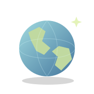

01 / POOL PARTY
함께 뛰어드는 풀파티.
풀장 곁에서 만나고. 음악에 맞춰 함께 즐기고.

BUSINESS VALLEY / CHIANG MAI
글로벌 커뮤니티 비전전 세계 디지털노마드와 자유롭게 만나고.
소통하고 협력하고. 도모하고. 스타트 업!
MYLODGE / AT A GLANCE
일도, 휴가도. 원하는 장면부터 만나보세요.
낮엔 풀장, 밤엔 새로운 만남.
노트북 하나로, 함께 만드는 기회.
여러 나라의 맛을 한자리에서.
취향에 맞는 공간에서 머물기.
가볍게 와서, 다채롭게 즐기기.
즐기는 사이, 나를 돌보는 시간.
시설·서비스·교환은 파크별 조성 및 운영 조건에 따라 안내합니다.
01 / CELEBRATE TOGETHER
사람과 음악, 새로운 만남. 함께 즐기는 휴가의 열기.
01 / POOL PARTY
풀장 곁에서 만나고. 음악에 맞춰 함께 즐기고.

02 / CLUB NIGHT
국경을 넘어 어울리고. 같은 리듬으로 춤추고.
02 / THE SPACES
풀파티·사업가 교류·세계 음식·별장·마켓·웰니스. 치앙마이를 즐기는 여섯 가지 경험.
INTERIOR / DESIGN DIRECTIONS
글로벌한 휴가의 일상을 담은 세 가지 디자인 방향.

ASIAN FUSION
우드와 라탄, 셀라돈의 색으로 담은 편안함.

EUROPEAN CONTEMPORARY
밝은 석재와 부드러운 곡선이 만드는 여유.

DYNAMIC GLOBAL
과감한 색과 다양한 소재로 채운 개성.
03 / SIGNATURE SCENES
일과 휴식, 새로운 만남. 내가 바라던 치앙마이의 하루.

아이디어를 나눌 동료. 함께 도모할 파트너. 일과 휴식을 넘나드는 글로벌 커뮤니티.

아메리카·유럽·중동·아프리카·아시아의 맛을 나누고. 식탁에서 시작되는 새로운 만남.

먹거리부터 손길이 담긴 소품까지. 보고, 맛보고, 고르는 즐거움.

풀장 곁 햇살 아래. 몸을 펴고 숨을 고르는 나만의 시간.
마사지·스파 등 별장 밖의 웰니스도 여행의 선택지입니다. 외부 활동이며 입점·제휴·이용료 포함은 확정 전입니다.

나무 그늘을 따라 걷고. 초록 풍경 곁에서 천천히 쉬고.
04 / LOCAL DISCOVERIES
북부 태국의 한 그릇부터 손길이 담긴 공예까지. 별장 밖에서 만나는 치앙마이.

로컬푸드 / KHAO SOI
코코넛 커리 국물에 달걀면과 바삭한 튀긴 면을 더한, 치앙마이를 대표하는 한 그릇.

로컬푸드 / SAI UA
레몬그라스와 라임 잎, 향신료를 넣어 구운 북부 태국식 돼지고기 소시지. 찰밥을 곁들여 현지의 맛을 즐겨보세요.
MADE IN CHIANG MAI

지역 공예 / BO SANG UMBRELLAS
대나무 살과 사(Saa) 종이, 손으로 그린 문양. 치앙마이 보쌍 마을이 이어온 우산 공예를 만납니다.
지역 공예 / CELADON
은은한 녹색 유약이 돋보이는 도자기. 치앙마이 공예의 멋을 일상에 담아보세요.

치앙마이 지역의 음식과 공예를 소개합니다.
BUSINESS VALLEY / WORK TOGETHER
개발자·창업가·크리에이터가 함께 자유롭게 만나고, 소통하고 협력하고, 다음 일을 도모하는 비즈니스밸리.
WORK / PREPARING
노트북 하나로 집중하는 낮.
노트북 하나로 집중하는 낮. 독립된 작업과 짧은 대화가 함께 가능한 업무 공간을 준비합니다.

LEARN / PREPARING
기술과 아이디어를 나누는 모임.
기술과 아이디어를 나누는 모임. 일정·대상·정원·참가 비용이 정해지면 행사별로 안내합니다.
BUILD / PREPARING
개발자·창업가·크리에이터가 만나 함께 도모하는 일.
개발자·창업가·크리에이터가 만나 함께 도모하는 일. 관심 분야와 참여 조건을 바탕으로 연결합니다.
코워킹·워크숍·프로젝트와 멤버 모임은 준비 중입니다. 참가 가능한 행사가 열리면 날짜·정원·대상·비용을 공개합니다. 국내의 구좌 가격·연 3박 조건은 치앙마이에 자동 적용하지 않으며 장기 체류 조건은 별도 안내합니다.
CHIANG MAI / DAY TO NIGHT
일하고, 맛보고, 만나고, 즐기고. 오래 머물수록 나만의 하루가 다양해지는 곳.
DAY / WORK & REST
코워킹에서 집중하고, 카페에서 대화를 나누고, 풀사이드에서 쉽니다.
코워킹에서 집중하고, 카페에서 대화를 나누고, 풀사이드에서 쉽니다. 일과 휴가를 하나의 리듬으로 연결합니다.
EVENING / FOOD & CONVERSATION
태국 로컬 음식에서 유럽·아메리카의 메뉴까지.
태국 로컬 음식에서 유럽·아메리카의 메뉴까지. 식탁에서 만난 이웃과 취향을 나누고 다음 모임으로 이어갑니다.
NIGHT / MUSIC & COMMUNITY
풀파티·클럽·DJ·바비큐가 있는 저녁을 그립니다.
풀파티·클럽·DJ·바비큐가 있는 저녁을 그립니다. 혼자 와도 관심사가 맞는 사람들과 어울릴 수 있는 모임을 준비합니다.
구성은 생활 경험의 예시입니다. 실제 영업 시간·행사 일정·입점·참가 비용은 확정 후 공개하며 매일 모든 프로그램이 운영된다는 뜻은 아닙니다. 마사지·스파·시내 마켓은 별도 지역 경험으로 구분합니다.
VACATION / ALWAYS ANOTHER POSSIBILITY
풀사이드의 활기에서 세계의 음식과 음악, 다음 비즈니스의 만남까지. 오래 머물수록 선택이 넓어지는 치앙마이의 휴가를 그립니다.
PARK CONCEPT / POOL PARTY
물가의 카바나에서 쉬고, 음악이 시작되면 함께 어울리는 장면을 구상합니다. 행사 구성과 운영일, 참가 조건은 확정 후 안내합니다.
PARK CONCEPT / CLUB & MUSIC
클럽과 음악 라운지, DJ가 있는 저녁으로 휴가의 선택을 넓힙니다. 실제 공간과 운영 시간, 입장·주류 이용 조건은 별도 안내할 계획입니다.
PARK CONCEPT / GLOBAL DINING
아시아·유럽·아메리카 등 다양한 음식과 대화가 이어지는 다이닝을 구상합니다. 입점과 메뉴, 식사 포함 여부·가격은 확정 전입니다.
PARK CONCEPT / BUSINESS
IT·창업·비즈니스의 관심사를 가진 사람들이 생각을 나누는 커뮤니티를 지향합니다. 교류 공간과 모임 방식은 준비 중이며 투자 성과를 약속하지 않습니다.
LOCAL EXPERIENCE / MASSAGE & WELLNESS
별장 밖에서 알아볼 수 있는 마사지·스파 등 웰니스 활동을 휴가의 선택지로 소개합니다. 단지 내 입점이나 제휴·예약 대행, 이용료 포함이 확정된 서비스는 아닙니다.
LOCAL EXPERIENCE / CITY & MARKET
현지 음식과 마켓, 공예를 찾아보는 시간을 더합니다. 주변 지역 활동은 마이롯지 자체 운영·포함 혜택과 구분하며 영업·이동·비용은 개별 확인이 필요합니다.
단지 내 구상과 주변 지역 활동을 나누어 소개합니다. 내부 시설·행사는 계획 단계이며, 외부 활동이 숙박이나 오너 혜택에 포함된다는 뜻은 아닙니다.
CONCIERGE / LIVE LIGHTER
일과 휴가를 오가는 하루가 잡다한 준비로 끊기지 않도록. 객실 준비와 이동, 마켓·배달, 함께 즐기는 저녁을 연결하는 생활 편의를 구상합니다.
01 / VILLA READY
청소·침구·도착 전 세팅을 연결하는 컨시어지를 구상합니다.
청소·침구·도착 전 세팅을 연결하는 컨시어지를 구상합니다. 체류 중 관리와 추가 요청의 범위는 운영 기준과 함께 안내합니다.
02 / CART
단지 내 카트 이동을 검토합니다.
단지 내 카트 이동을 검토합니다. 운행 구역과 이용 방법, 시간·요금은 확정 후 안내하며 공항 이동을 포함하는 서비스는 아닙니다.
03 / ON-SITE MARKET
단지 내 마켓에서 음료·식재료·생활용품을 고르는 편의를 구상합니다.
단지 내 마켓에서 음료·식재료·생활용품을 고르는 편의를 구상합니다. 별장 밖 로컬 마켓과는 다른 자체 생활 편의 계획입니다.
04 / DELIVERY
음식과 생활용품 배달을 연결하는 방식을 검토합니다.
음식과 생활용품 배달을 연결하는 방식을 검토합니다. 주문 품목과 배송 범위·시간, 최소 주문·추가 비용은 확인 후 안내합니다.
05 / BARBECUE
바비큐를 함께 준비하고 즐기는 야외 경험을 구상합니다.
바비큐를 함께 준비하고 즐기는 야외 경험을 구상합니다. 이용 장소와 예약, 장비·식재료 구성 및 요금은 파크 운영안 확인 후 안내합니다.
06 / CAMPING & CAMPFIRE
캠핑과 캠프파이어를 별도 야외 프로그램으로 검토합니다.
캠핑과 캠프파이어를 별도 야외 프로그램으로 검토합니다. 설치 장소와 안전·기상 기준, 준비물과 신청 조건을 먼저 확인합니다.
생활 편의 구상 안내 · 서비스별 운영 여부와 시점, 신청 방법, 이용 단위와 요금은 확정 후 안내합니다. 카트·마켓·배달·야외 체험이 모두 포함되거나 상시 제공되는 것은 아닙니다.
OWNER / MORE THAN A STAY
나만의 공간에서 머물고, 함께하는 시간을 즐기고, 다른 지역의 하루를 그립니다. 선택 전에 권리와 이용 조건을 차근히 확인하세요.
01 / SHARE A DAY
친구나 지인과 좋은 시간을 나누는 오너 경험을 검토합니다. 선물·대여 범위, 비회원 이용과 오너 동반 여부는 이용 규정 확인 후 안내합니다.
02 / SWAP
국내외 다른 파크의 오너와 교환 이용하는 SWAP을 구상합니다. 대상 파크, 이용 일수, 차액·수수료와 배정 방식은 확정 전입니다.
03 / UNDERSTAND YOUR TERMS
참여 단위와 독립 이용 범위, 권리 기간, 소유 증빙·상속의 적용 범위를 계약 자료로 확인합니다. 가격과 납입 일정도 같은 기준으로 안내합니다.
오너 혜택은 검토 중인 이용 방식입니다. 선물·SWAP·렌트가 현재 제공되는 기능이거나 소유·상속을 일괄 보장한다는 뜻은 아닙니다.

MYLODGE / GLOBAL BUSINESS COMMUNITY
휴양지에서 만난 동료와 파트너.
소통과 협력으로 이어지는 글로벌 비즈니스 커뮤니티.